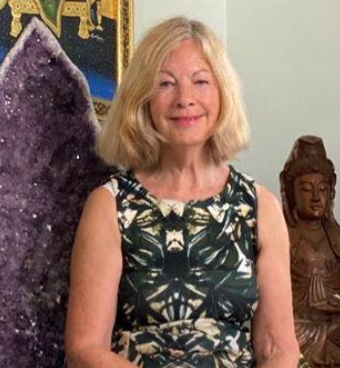

✦ Our Story
About
Carol Nayach & the Arcturian Emissaries of Light
Carol's Journey
How It Began
I first became aware of the Arcturians through one of David K Miller's channelled books The Sacred Triangle Volume 1. I picked up the book, read one paragraph and decided I needed to meditate with the information. Immediately the Arcturian Helio-Ah came in through my crown, down into my heart and started working with me.
So I realised I would be working with the Arcturians. I later discovered that I am an Arcturian Starseed with a soul connection with Helio-Ah. From then on I worked to become a clear channel for the Arcturian energies and as my ability developed I discovered I could channel the energies of many higher beings including Jesus/Sananda, Mary Magdalene, Archangel Metatron, and more.
My spiritual journey over the last few years has been the most rewarding period of my life and I feel such love and appreciation for the Arcturians, guides and teachers who have supported me, loved me, guided me and accelerated my growth and evolution.
For many years, I have devoted my life to sharing the teachings of the Arians and helping others awaken to the wisdom of their hearts.
Through meditation, spiritual guidance and healing I have supported people from around the world in deepening their connection with the higher selves and discovering greater peace, purpose and inner transformation.
As the founder of the Arian mysteries of light, I offer regular guided meditations, retreats and personal healing sessions inspired by the loving guidance of the Arcturians.
My work centres on the understanding that every soul carries a divine light within and that love is the key to personal and planetary transformation.
My meditations invite participants to journey through the Arian Stargate, visit the Crystal Temple and experience the Arian healing chambers aboard the starship Athena. Through the sacred experiences, many people have found healing clarity, spiritual awakening and a renewed sense of purpose.
My work also embraces planetary healing, supporting the evolution of humanity and encouraging people to live with greater compassion, unity and heart-centered awareness.
Whether you are new to the Arcturian teachings or have been walking a spiritual path for many years, I warmly welcome you to join our community and explore the transformational journey of the heart.
Love is the key.

Who They Are
The Arcturians
We come to you with open hearts. Our mission is to assist you in your ascension process and the ascension of your planet. It is a mission of love.
We are a highly evolved civilisation and have assisted many planets in their ascension. Our spiritual technology is very advanced and we wish to teach you how to heal and ascend your planet and yourselves.
Our technology includes visits to our healing chambers on our magnificent starship Athena. We invite you to come to our Arcturian Crystal Temple in the etheric realm which we have created for you, to receive our energy transmissions of love and light and meet many of the ascended masters.
Arcturian Light
The journey of soul evolution is, at its heart, the journey of opening the heart.
It is about learning to live through the higher wisdom and intelligence of the heart, rather than being guided solely by the ego mind.
As we integrate more of our higher self and the light of our soul into our being, the High Heart begins to awaken and expand. We begin to experience the higher qualities of unconditional love, peace, acceptance, forgiveness, beauty and inner stillness.
Through this process, we move towards the embodiment of Christ Consciousness: a state of unity, love, enlightenment and spiritual freedom.
It is said that every soul passes through the Arcturian Stargate during its ascension journey. The Arcturians are the guardians of this sacred gateway and work under the direction of Archangel Metatron.
The Arcturian Stargate is a realm of extraordinary beauty, profound peace and unconditional love. During some of our guided meditations, we journey there to experience its healing frequencies and reconnect with our soul's highest path.
The keys to ascension have always resided within the heart.
The Arcturians have created and made available the spiritual technologies needed to support humanity's journey of ascension.
Through the Arcturian Stargate, the Crystal Temple and the Sacred Etheric Crystals, they offer healing frequencies, higher wisdom and energetic activations to help us awaken to our true spiritual nature.
They wish to teach us how to heal ourselves and support the healing of our beautiful planet, the Blue Jewel.
They also wish to help Lightworkers and Starseeds remember and fulfil their soul missions.
The Arcturian energy transmissions can be deeply powerful and transformative, helping us to raise our vibration and expand our spiritual awareness.
If you feel drawn to this work and would like to learn more, join our meditations or become part of our community, we would be delighted to welcome you.
Please get in touch. We would love to hear from you.
Planetary Healing
The Sacred Triangle
An important part of our work is planetary healing, with a special focus on the United Kingdom and the creation of a City of Light in London.
Once each month, we gather on a Sunday for The Sacred Triangle, joining together in meditation and focused intention to hold and transmit light for the highest good of humanity and the Earth.
Each gathering is a deeply sacred experience. It often feels as though beings of light from throughout the universe have come together to assist us, sending their loving energies and amplifying the work of the group.
Wonderful results have been achieved through these gatherings. Those who participate also receive healing, spiritual activation and support for their own personal journeys.
Whether you are joining us for the first time or have been walking this path for many years, you are warmly invited to become part of this collective work of light.
"The Power of the Universe will come to your assistance if your heart and mind are in Unity."
Join Us Online
Live Meditations, Teachings & Questions
Our guided meditations, spiritual teachings and question-and-answer sessions are shared live on Zoom, allowing people from around the world to join us wherever they are.
The Arcturians have encouraged us to expand this work so that more souls can find one another and come together in love, unity and higher consciousness.
As our community grows, the energy of our collective work becomes increasingly powerful.
When we meditate together, we create a field of light that supports our own spiritual development and contributes to the healing and ascension of our beautiful Planet Earth.
Whether you are new to the Arcturian teachings or have been walking this path for many years, you are warmly invited to join us.
Our work has been greatly influenced by the many channelled books of David K Miller from the Arcturians and his Arcturian Group of Forty Project. For more information refer to David Miller Group of Forty. Our thanks to him for the enormous volume of material he has channelled and published.